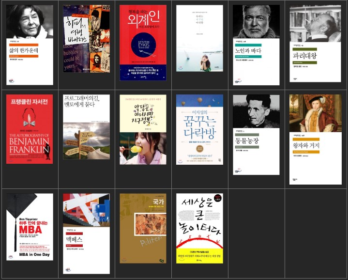

1년간 내가 보았던 책 list

1. 삶의 한 가운데 - 루이제 린저
2. 행복을 파는 외계인 - 웨인 다이어
3. 프로그래머의 길, 멘토에게 묻다
4. 파리대왕(Lord of the flies) - 윌리엄 골딩 (20.03.18 - 03.25)
5. 왕자와 거지(The Prince and the Pauper) - 마크 트웨인 (20.04.02 - 04.05)
6. 하루만에 끝내는 MBA - 벤 티글러 & 조엘 이츠 (20.04.05 - 04.24)
7. 세상을 바꾼 32개의 통찰(Founders at work - Stories of start-ups early days)
8. 맥베스 - 윌리엄 셰익스피어 (20.05.01 - 05.07)
9. (1독) 국가(πολιτεία 폴리테이아, 영어: The Republic) - 플라톤 (20.06.08 - 06.11)
10. 리딩으로 리드하라 - 이지성 (20.06.08 -
11. 세상은 큰 놀이터다 - 김정산 (20.06.08 - 06.18)
12. 피터 드러커 자서전 - 피터 드러커
13. 창의성이 없는 게 아니라 꺼내지 못하는 것입니다 - 김경일
14. 군대 간 아들에게 - 공병호
|
본 영화 리스트
포레스트 검프
쇼생크 탈출
비포 선라이즈
굿윌헌팅 1997
인생은 아름다워
The Legend of 1900
Enemy of the state (1998)
노팅힐
올드보이
비포 선셋 2004
이터널 션샤인
클로저
킹콩
10 Items or less
Once
어거스트 러쉬
초속5cm
핸콕
슬럼독 밀리어네어
벤자민 버튼의 시간은 거꾸로 간다
2012
김종욱 찾기
인타임
퍼스트 어밴져
써니
Upside down
범죄와의 전쟁
건축학개론
도둑들
레미제라블
늑대소년
|